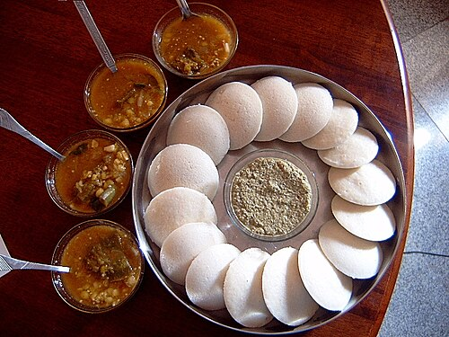

Idli

Description
Idli or idly is a type of savoury rice cake, originating from South India, popular as a breakfast food in Southern India and in Sri Lanka.
Ingredients
Steps
- Grease the idli moulds with oil.
- Pour the batter into the moulds (don't overfill).
- team in an idli steamer or pressure cooker (without the whistle) for 10-12 minutes.
- Insert a toothpick or knife to check—if it comes out clean, they're done.
- Let them cool for a minute, then scoop out with a spoon.
Home